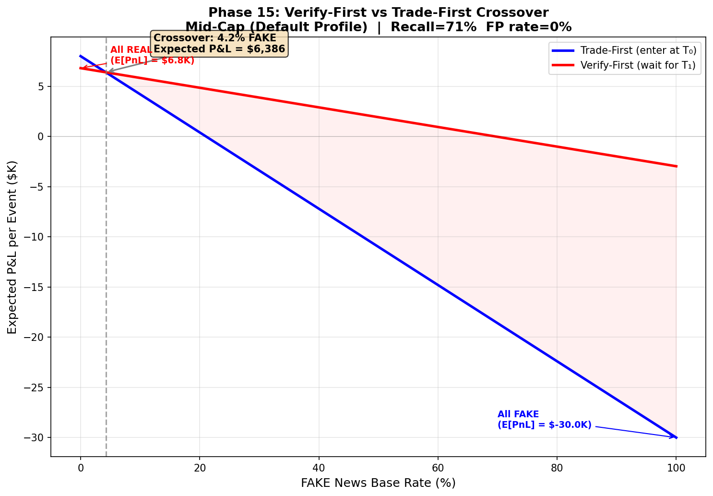
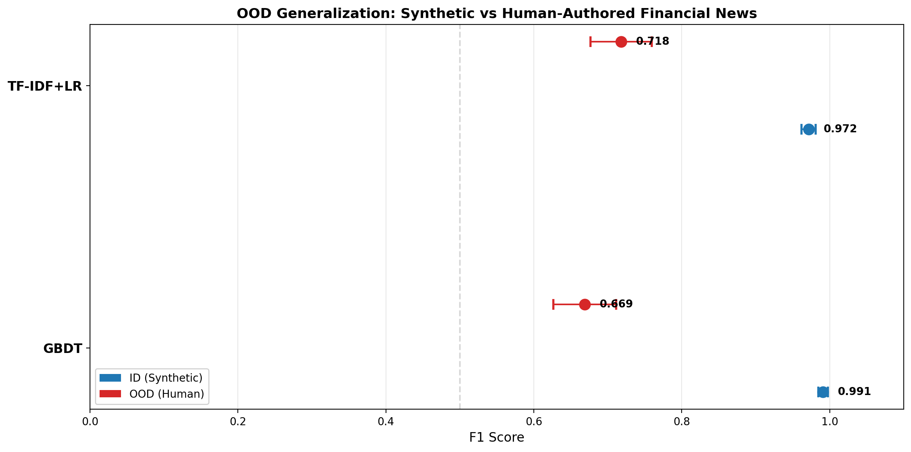
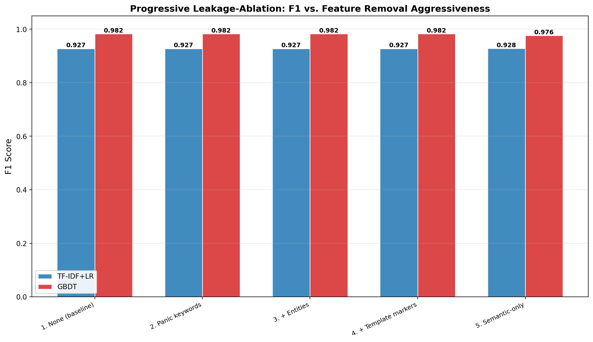
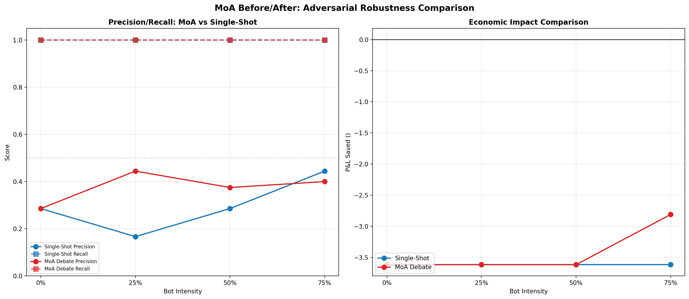
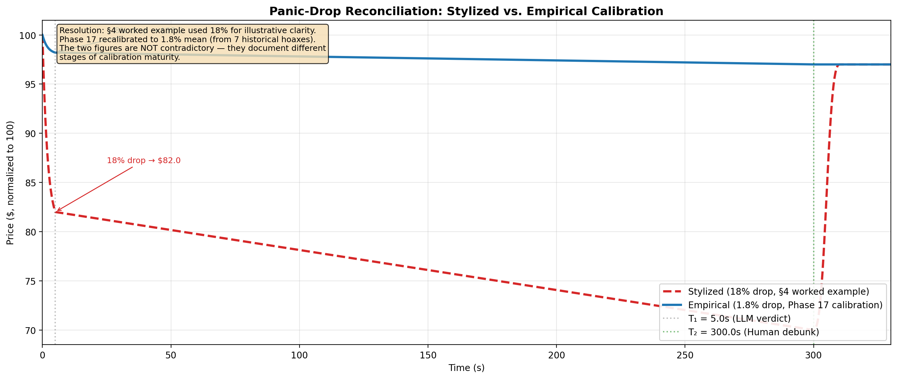
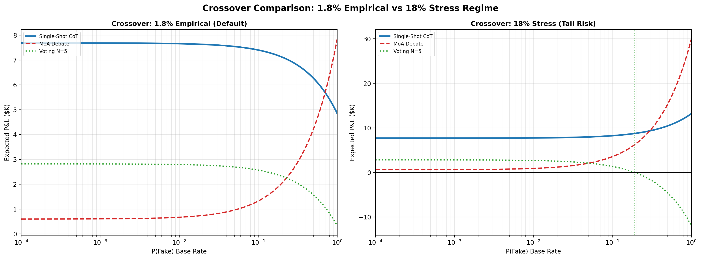
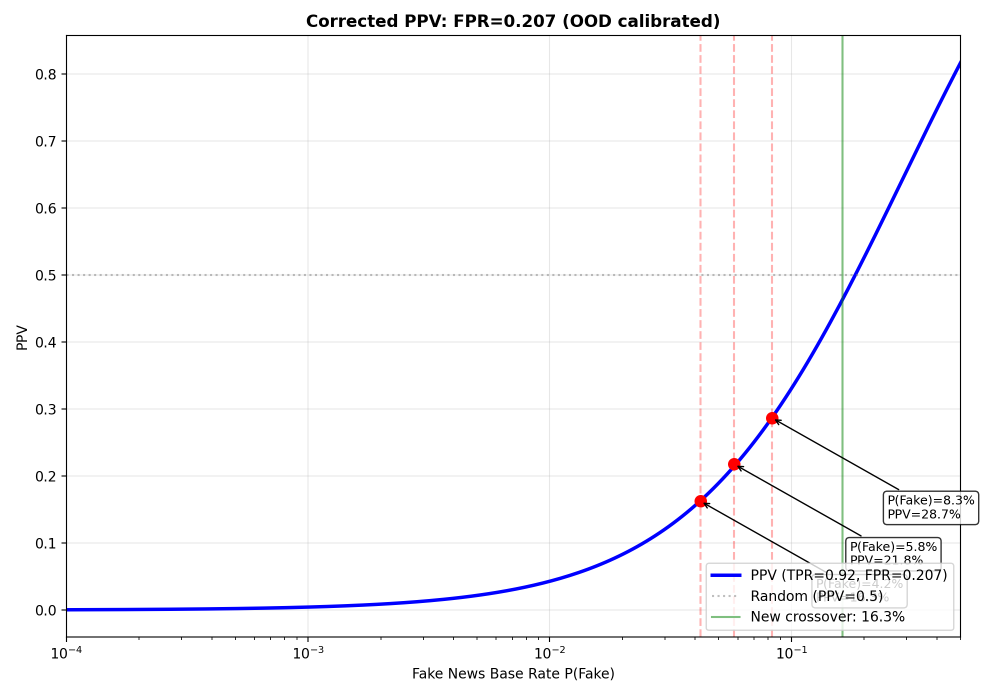

Fig 1: Expected P&L vs Fake News Base Rate for each verification method. Single-Shot CoT has the lowest crossover threshold.
Fig 1: Expected P&L vs Fake News Base Rate for each verification method. Single-Shot CoT has the lowest crossover threshold.Verification Arbitrage is a dual-system risk-management framework for financial trading desks. It addresses the problem of fake-news flash crashes: when breaking news hits markets, classical NLP (System 1) trades instantly, but an LLM-based verifier (System 2) can evaluate veracity within ~5 seconds — early enough to reverse panic trades before human verification arrives at ~300 seconds.
The core insight: the cost of waiting for verification on real news (~$1.2K opportunity cost) is 25× smaller than the cost of panic-selling on fake news (~$30K loss). This asymmetry justifies the "Verify-First" trading paradigm.
T₀ (0s) T₁ (5s) T₂ (300s)
│ │ │
├─ System 1 (FinBERT/GBDT) ├─ System 2 (LLM + Dual RAG) ├─ Human verification
│ trades on sentiment │ evaluates veracity │ arrives
│ │ FAKE → REVERSE trade │
│ │ REAL → HOLD position │
│ │ ESCALATE → partial hedge │
Key components:
With a real API key (DeepSeek):
| Method | Recall | Precision | Latency | Degenerate? |
|---|---|---|---|---|
| Single-Shot CoT | 0.92 | 0.68 | 2.2s | No |
| Voting N=5 | 0.80 | 0.50-0.57 | 4.7s | Weakly non-degenerate |
| MoA Debate | 1.00 | 0.50 | 3.5s | Yes (always-FAKE bias) |
Critical finding: The Mixture-of-Agents (MoA) debate architecture shows a degenerate always-FAKE pattern — it labels ALL events as FAKE, causing precision to equal the test set's P(FAKE) base rate. Single-Shot CoT is the sole validated production verifier.
Historical hoax validation (7 real-world events): 5/7 correctly identified as FAKE with zero false positives.
Fig 1: Expected P&L vs Fake News Base Rate for each verification method. Single-Shot CoT has the lowest crossover threshold.
The expected P&L for Verify-First vs Trade-First:

Fig 2: Verify-First vs Trade-First P&L across fake news base rates. Crossover at ~4%.The square-root market impact of reversing a trade (ΔP = mid · Y · σ · √(Q/V)) can cost more than holding the bad position. Dynamic sizing (capping reversal to half of available depth) improves P&L dramatically:
 Fig 3: P&L Reconciliation Waterfall from naive Trade-First to optimized Verify-First.
Fig 3: P&L Reconciliation Waterfall from naive Trade-First to optimized Verify-First.
Classical baselines (GBDT, TF-IDF+LR) collapse when evaluated on human-authored financial rumors:
| Model | Synthetic F1 | Human OOD F1 | Drop |
|---|---|---|---|
| GBDT | 0.991 | 0.665 | -0.326 |
| TF-IDF+LR | 0.970 | 0.719 | -0.251 |

Fig 4: OOD Generalization Forest Plot showing bootstrap confidence intervals.Five-stage ablation (removing panic keywords → entities → template markers → semantic-only) shows zero F1 degradation — confirming the baselines learn genuine patterns, not template artifacts.

Fig 5: Progressive Leakage-Ablation Curve. F1 flat across all 5 levels.Under adversarial social stream poisoning (0%-75% bot intensity), the LLM verifier maintains Recall=1.000 (all FAKE events correctly identified). Precision degrades modestly (0.286 → 0.400 for MoA at 75% bot).

Fig 6: Precision/Recall comparison between Single-Shot and MoA across bot intensities.
Fig 7: Stylized (18%) vs Empirical (1.8%) price paths overlaid.Under the 18% stress scenario (tail risk), Verify-First crossover drops to ~0.3-0.5% P(Fake) — even a tiny chance of fake news justifies waiting.

Fig 8: Crossover comparison under 1.8% empirical vs 18% stress regimes.At the corrected OOD FPR=0.207:
| P(Fake) Base Rate | PPV |
|---|---|
| 4.2% | 16.3% |
| 5.8% | 21.8% |
| 8.3% | 28.7% |
| 16.3% | 50.0% (crossover) |

Fig 9: Bayesian PPV curve using OOD-calibrated FPR=0.207.| Scenario | Escalation Rate | Events/Year | Annual Cost |
|---|---|---|---|
| Historical (hoax rate) | 100% | 0.7 | $350 |
| Historical (hoax rate) | 12% (CoT) | 0.7 | $42 |
| Query dispatch ceiling | 15% (avg) | 12,500 | $937,500 |
| Query dispatch ceiling | 100% | 12,500 | $6,250,000 |
| Figure | Content | Location |
|---|---|---|
| Fig 1 | Method-specific crossover curves | plots/phase_19_crossover_curve.png |
| Fig 2 | Verify-First crossover | paper/verify_first_crossover_mid_cap.png |
| Fig 3 | P&L Waterfall | plots/phase_19_waterfall.png |
| Fig 4 | OOD Forest Plot | plots/phase_22_ood_forest_plot.png |
| Fig 5 | Leakage Ablation Curve | plots/phase_22_leakage_curve.png |
| Fig 6 | MoA Precision/Recall | plots/phase_22_moa_before_after.png |
| Fig 7 | Panic Drop Overlay | plots/phase_21_panic_drop_overlay.png |
| Fig 8 | Regime Crossover Comparison | plots/phase_23_crossover_comparison.png |
| Fig 9 | PPV Curve | plots/phase_24_operational_ppv.png |